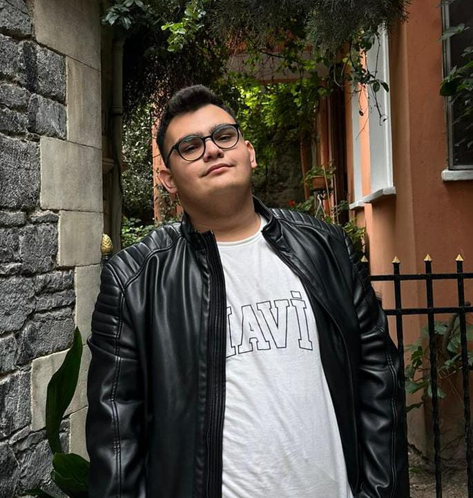

arrow_back
Back to Team

Content Team
Ömer Efe Merey
Molecular Biology and Genetics (2nd Year)
Istanbul Sabahattin Zaim
University
Content creator with a specific interest in marine biology and guppy genetics.
person About Me
I am a 2nd year MBG student. My primary research interest lies in aquatic life, specifically the genetics and breeding of guppies.
As part of the IPS Content Team, I produce articles and posts that highlight the diversity of biological sciences, including marine biology.
history_edu Experience
2024 — Present
Content Creator
Interdisciplinary Project Society (IPS)
Writing about biological news and research.
bolt Skills & Interests
Marine
Biology
Genetics
Content
Writing
Aquaculture